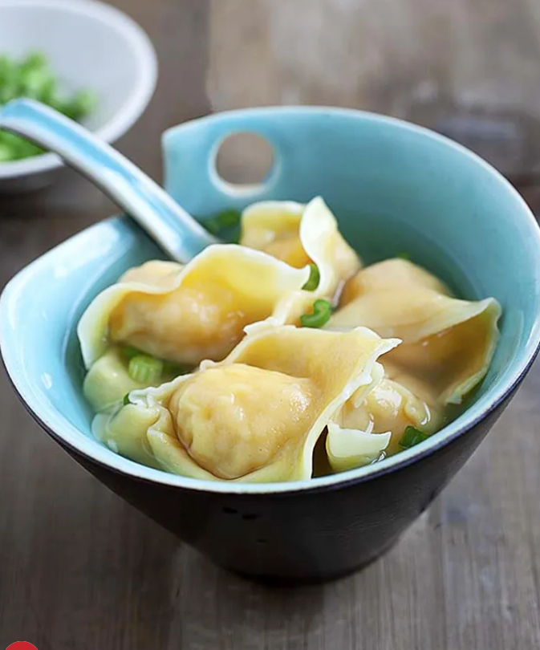

Wonton Soup |
Back to Home | |
|  | ||
|
Ingredients: 8 oz. peeled and deveined big shrimp 1 oz. yellow chives or scallions (chopped finely) 15 Wonton wrappers Water (for boiling wontons) Seasonings: 0.25 tsp sesame oil 0.5 tsp chicken bouillon powder 0.25 tsp fish sauce 1 pinch salt 3 dashes white pepper 0.5 tsp cornstarch Soup: 3 cups low sodium chicken broth Salt to taste White pepper to taste Sesame oil to taste Cooking Instructions: Step1: Rinse shrimp and pat dry, then cut each into 3-4 pieces.Add half of the chopped yellow chives to the shrimp.Marinate with seasonings for 1 hour. Step2: Place a wonton wrapper on your palm.Add about 1 teaspoon of shrimp filling in the center.Dap the corners with water and fold into a triangle shape.Gather corners, fold down, and pinch in the middle to seal.Repeat until filling is used up Step3: Bring chicken broth to boil.Add salt, white pepper, and sesame oil to taste. Step4: Heat another pot of water to boiling.Drop wontons into boiling water, stir gently to prevent sticking.Boil until wontons are fully cooked and float to the top. Step5: Transfer cooked wontons to the soup.Serve immediately. Enjoy your delicious wonton soup! |